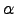
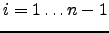
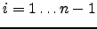

Gian Paolo Jesi (jesi@cs.unibo.it)
November 16, 2005
NOTE: This tutorial revision covers PEERSIM release 1.0
topics.
This tutorial teaches you how to build from scratch a new PEERSIM ( PEERSIM project page: http://sourceforge.net/projects/peersim) topology generator. In order to understand this tutorial, the reader is encouraged to start reading the first PEERSIM tutorial (http://peersim. sourceforge.net/peersim_HOWTO.html) to have an idea of the basic concepts that will not be discussed any further in this document.
The aim of this tutorial is to be as practical as possible; the goal is to give the reader ideas about technical or intermediate level features of PEERSIM and to encourage him/her to experiment further. The full source code discussed in this document is available via CVS at PEERSIM project page in the peersim.example.hot class package.
The network abstraction in PEERSIM is a (sometimes huge) array of
Node structures (interfaces); because of the size of the network
and to overcome scalability problems, usually in large P2P networks
each node knows about the existence of a very small subset of other
nodes (e.g., order of  where
where  is the whole network size). Thus
each node has a short list of other node references, usually called
``neighbors'', build accordingly to some kind of strategy
or rule.
is the whole network size). Thus
each node has a short list of other node references, usually called
``neighbors'', build accordingly to some kind of strategy
or rule.
Thus, we can say that a topology is how nodes are arranged (linked) together and clearly this depends upon the particular chosen rule. Examples of topology are the following (not exhaustive at all):
In this document, we have chosen to code a particular topology generator to build Internet-like tree topologies. The building process is based on the preferential attachment approach. The rule applied is quite simple and takes into account geometric and network constraints to better mimic real world network. The preferential attachment choice can be affected by a parameter () that amplifies or reduces the geometric location influence in favor of the path distance.
The rule strategy is the following: we consider a square unit region
 , then we start with node  chosen at random and we set
, then we start with node  chosen at random and we set  (it i
(it i
s the root node). For each i with  we choose a
new node
we choose a
new node  in the region
in the region  and we connect it to an early
inserted node
and we connect it to an early
inserted node  that minimize the following formula:
that minimize the following formula:
where:
After having chosen a node  , we set
, we set
 . At
the end we obtain a tree rooted in . This topology implies that
every node (except the root) has an out-degree of exactly one link.
. At
the end we obtain a tree rooted in . This topology implies that
every node (except the root) has an out-degree of exactly one link.
To get further details about this model, we suggest the following readings:
The model should generate a topology that exhibits a power-law bound on the in-degree sequence of nodes; but, as stated in the second previously listed paper, this power-law prediction is not true. In fact this preferential attachment model does not generate always such an in-degree sequence distribution, but for some parameter values it shows a power-law like behaviour.
Our aim is to write a standard PEERSIM component able to produce the desired topology according to the parameter. Apart from the parameter, the algorithm relies also on how the nodes are distributed in the squared area. We choose to initialize their 2d-coordinates using a uniformly random distribution.
We are not interested in building the topology in a set of steps over time: we want something like a topology initializer that arranges the wiring from scratch in one step.
In order to build the desired topology, we need to extend or implement the following classes/interfaces:
As we will see in next sections, some of the classes we intend to code are not needed. PEERSIM standard components can be used instead. It is important to decouple carefully all the tasks we intend to accomplish in order to figure out if there are ``common patterns'' that are already available and ready to use.
As we stated so far, the protocol code is minimal:
package example.hot;
import peersim.core.Protocol;
public class InetCoordinates implements Protocol {
// ------------------------------------------------------------------------
// Fields
// ------------------------------------------------------------------------
/** 2d coordinates components. */
private double x, y;
// ------------------------------------------------------------------------
// Constructor
// ------------------------------------------------------------------------
public InetCoordinates(String prefix) {
/* Un-initialized coordinates defaults to -1. */
x = y = -1;
}
public Object clone() {
InetCoordinates inp = null;
try {
inp = (InetCoordinates) super.clone();
} catch (CloneNotSupportedException e) {
} // never happens
return inp;
}
public double getX() {
return x;
}
public void setX(double x) {
this.x = x;
}
public double getY() {
return y;
}
public void setY(double y) {
this.y = y;
}
}
The actual ``who knows whom'' relation (the topology) container is decoupled from this class. Any standard PEERSIM component implementing the Linkable interface can be used (see the configuration file in Section 5).
The class is basically a structure encapsulated in an
object to hold the  and
and  coordinate components. Another solution
could be to define a specialized sub-class of
peersim.core.GeneralNode in which the coordinate be stored
and then use peersim.core.IdleProtocol to handle the nodes
``who knows whom'' relations. Both the approaches are identical in
practice, it is just a developer choice. The reader can implement this
second suggestion just for exercise.
coordinate components. Another solution
could be to define a specialized sub-class of
peersim.core.GeneralNode in which the coordinate be stored
and then use peersim.core.IdleProtocol to handle the nodes
``who knows whom'' relations. Both the approaches are identical in
practice, it is just a developer choice. The reader can implement this
second suggestion just for exercise.
The clone() method must be redefined according to the Protocol class contract. It does not have to do much: there are only primitive types that are cloned by default.
The coordinates components are not public and can be accessed by their getter/setter methods.
package example.hot;
import peersim.config.Configuration;
import peersim.core.CommonState;
import peersim.core.Control;
import peersim.core.Network;
import peersim.core.Node;
public class InetInitializer implements Control {
// ------------------------------------------------------------------------
// Parameters
// ------------------------------------------------------------------------
private static final String PAR_PROT = "protocol";
// ------------------------------------------------------------------------
// Fields
// ------------------------------------------------------------------------
/** Protocol identifier, obtained from config property {@link #PAR_PROT}. */
private static int pid;
// ------------------------------------------------------------------------
// Constructor
// ------------------------------------------------------------------------
public InetInitializer(String prefix) {
pid = Configuration.getPid(prefix + "." + PAR_PROT);
}
// ------------------------------------------------------------------------
// Methods
// ------------------------------------------------------------------------
/**
* Initialize the node coordinates. The first node in the {@link Network} is
* the root node by default and it is located in the middle (the center of
* the square) of the surface area.
*/
public boolean execute() {
// Set the root: the index 0 node by default.
Node n = Network.get(0);
InetCoordinates prot = (InetCoordinates) n
.getProtocol(pid);
prot.setX(0.5);
prot.setY(0.5);
// Set coordinates x,y
for (int i = 1; i < Network.size(); i++) {
n = Network.get(i);
prot = (InetCoordinates) n.getProtocol(pid);
prot.setX(CommonState.r.nextDouble());
prot.setY(CommonState.r.nextDouble());
}
return false;
}
}
The initialization class has to implement the Control interface and its only method: execute(). The constructor reads the only parameter (protocol) from the configuration file. It declares the protocol holding the coordinates.
The class is very simple, it
has to generate uniformly random numbers for each node coordinate
components ( and
and  ). The only exception is the root node that, by
default, is the index 0 node. Its coordinate is forced to be
). The only exception is the root node that, by
default, is the index 0 node. Its coordinate is forced to be  . This particular choice is to generate nice looking graphs when
it is time to plot them.
. This particular choice is to generate nice looking graphs when
it is time to plot them.
To generate random number, the static field r of CommonState is used.
The factory class uses the features of a standard PEERSIM component: peersim.dynamics.WireGraph (it is a Control instance). The overlay is wired using the Graph API methods; the wiring logic has to be in the wire() method that is called by the superclass.
The class has to read from the configuration file both the value parameter (alpha in the config file) and the coordinate container protocol identifier (coord_protocol in the config file). This is done in the class constructor. The other parameter, protocol is inherited by the superclass: it is the Linkable implementing protocol identifier.
The wire() method contains the wiring rules described in Section 2.1.
To keep track of the hop distances, a network sized integer array is
used. Each index  slot value corresponds to the
slot value corresponds to the  hop distance from the
root.
hop distance from the
root.
By default, the wiring process considers the index 0 node as the root.
A static utility method, distance(), gives the Euclidean distance between two nodes.
package example.hot;
import peersim.config.Configuration;
import peersim.core.Linkable;
import peersim.core.Network;
import peersim.core.Node;
import peersim.dynamics.WireGraph;
import peersim.graph.Graph;
public class WireInetTopology extends WireGraph {
// ------------------------------------------------------------------------
// Parameters
// ------------------------------------------------------------------------
private static final String PAR_ALPHA = "alpha";
private static final String PAR_COORDINATES_PROT = "coord_protocol";
// --------------------------------------------------------------------------
// Fields
// --------------------------------------------------------------------------
/* A parameter that affects the distance importance. */
private final double alpha;
/** Coordinate protocol pid. */
private final int coordPid;
// --------------------------------------------------------------------------
// Initialization
// --------------------------------------------------------------------------
public WireInetTopology(String prefix) {
super(prefix);
alpha = Configuration.getDouble(prefix + "." + PAR_ALPHA, 0.5);
coordPid = Configuration.getPid(prefix + "." + PAR_COORDINATES_PROT);
}
/**
* Performs the actual wiring.
* @param g
* a {@link peersim.graph.Graph} interface object to work on.
*/
public void wire(Graph g) {
/** Contains the distance in hops from the root node for each node. */
int[] hops = new int[Network.size()];
// connect all the nodes other than roots
for (int i = 1; i < Network.size(); ++i) {
Node n = (Node) g.getNode(i);
// Look for a suitable parent node between those allready part of
// the overlay topology: alias FIND THE MINIMUM!
// Node candidate = null;
int candidate_index = 0;
double min = Double.POSITIVE_INFINITY;
for (int j = 0; j < i; j++) {
Node parent = (Node) g.getNode(j);
double jHopDistance = hops[j];
double value = jHopDistance
+ (alpha * distance(n, parent, coordPid));
if (value < min) {
// candidate = parent; // best parent node to connect to
min = value;
candidate_index = j;
}
}
hops[i] = hops[candidate_index] + 1;
g.setEdge(i, candidate_index);
}
}
private static double distance(Node new_node, Node old_node, int coordPid) {
double x1 = ((InetCoordinates) new_node.getProtocol(coordPid))
.getX();
double x2 = ((InetCoordinates) old_node.getProtocol(coordPid))
.getX();
double y1 = ((InetCoordinates) new_node.getProtocol(coordPid))
.getY();
double y2 = ((InetCoordinates) old_node.getProtocol(coordPid))
.getY();
if (x1 == -1 | x2 == -1 | y1 == -1 | y2 == -1)
throw new RuntimeException(
"Found un-initialized coordinate. Use e.g.,\
InetInitializer class in the config file.");
return Math.sqrt((x1 - x2) * (x1 - x2) + (y1 - y2) * (y1 - y2));
}
}
Some of the observer tasks depicted in Section 3 can be performed by standard PEERSIM components available in the distribution.
For example, to compute statistics regarding the degree distribution, the user can
use the peersim.reports.DegreeStats object. To test the network
robustness, RandRemoval can be used: it kills nodes randomly
and prints statistics about the number of generated clusters and their
size.
However, to dump the topology to a file in a plottable form, we still need to write our observer: InetObserver implementing the Control interface and the corresponding execute() method. To ease even further our job, we decided to not implement directly the Control interface, but to extend persim.reports.GraphObserver. This template class gives us a graph API to interact with the protocol to be inspected.
The constructor takes care of reading the parameters from the configuration file. The protocol parameter refers to the protocol identifier holding the ``who knows whom'' relation (it is a Linkable protocol). It is inherited by the superclass.
The other parameters, coord_protocol and file_base, correspond respectively to the coordinate container protocol identifier and to the filename base used. The final filename generated by the program is:
The number in the middle of the filename keeps track of the current cycle number; 8 digits are available as a cycle counter. This is due to the fact that, as any control object, the observer can run at every cycle and in this case a different file has to be generated at each time.
package example.hot;
import java.io.FileOutputStream;
import java.io.IOException;
import java.io.PrintStream;
import peersim.config.Configuration;
import peersim.core.Node;
import peersim.graph.Graph;
import peersim.reports.GraphObserver;
import peersim.util.FileNameGenerator;
public class InetObserver extends GraphObserver {
// ------------------------------------------------------------------------
// Parameters
// ------------------------------------------------------------------------
private static final String PAR_FILENAME_BASE = "file_base";
private static final String PAR_COORDINATES_PROT = "coord_protocol";
// ------------------------------------------------------------------------
// Fields
// ------------------------------------------------------------------------
private final String graph_filename;
private final FileNameGenerator fng;
private final int coordPid;
// ------------------------------------------------------------------------
// Constructor
// ------------------------------------------------------------------------
public InetObserver(String prefix) {
super(prefix);
coordPid = Configuration.getPid(prefix + "." + PAR_COORDINATES_PROT);
graph_filename = Configuration.getString(prefix + "."
+ PAR_FILENAME_BASE, "graph_dump");
fng = new FileNameGenerator(graph_filename, ".dat");
}
// Control interface method.
public boolean execute() {
try {
updateGraph();
System.out.print(name + ": ");
// initialize output streams
String fname = fng.nextCounterName();
FileOutputStream fos = new FileOutputStream(fname);
System.out.println("Writing to file " + fname);
PrintStream pstr = new PrintStream(fos);
// dump topology:
graphToFile(g, pstr, coordPid);
fos.close();
} catch (IOException e) {
throw new RuntimeException(e);
}
return false;
}
private static void graphToFile(Graph g, PrintStream ps, int coordPid) {
for (int i = 1; i < g.size(); i++) {
Node current = (Node) g.getNode(i);
double x_to = ((InetCoordinates) current
.getProtocol(coordPid)).getX();
double y_to = ((InetCoordinates) current
.getProtocol(coordPid)).getY();
for (int index : g.getNeighbours(i)) {
Node n = (Node) g.getNode(index);
double x_from = ((InetCoordinates) n
.getProtocol(coordPid)).getX();
double y_from = ((InetCoordinates) n
.getProtocol(coordPid)).getY();
ps.println(x_from + " " + y_from);
ps.println(x_to + " " + y_to);
ps.println();
}
}
}
}
In the execute() method we MUST call updateGraph() (a GraphObserver protected method) in order to check if some change has occurred on the actual graph. The scope of this mechanism is to save the time of constructing the graph if many observers are run on the same graph. Time savings can be very significant if the undirected version of the same graph is observed by many observers.
In addition, note that in execute() method the IO library functions used may throw some exceptions. In case of troubles, any kind of exception is catch-ed, but a runtime exception is thrown to stop the process.
The static utility method graphToFile() writes to disk the
actual topology. The idea is simple: for each node
 , the
, the  and
and  coordinates are collected and then for each
neighbor
coordinates are collected and then for each
neighbor  of node
of node  the coordinates are written in the following
format:
the coordinates are written in the following
format:
n.neighbor(i).x n.neighbor(i).y \newline n.x n.y \newline \newline}
The particular line triplet formatting order suits the gluplot needs.
Please note that the for loop starts from index  , not from
, not from  ;
this is due to the fact that node 0 is the root and has no out-bound
connections.
;
this is due to the fact that node 0 is the root and has no out-bound
connections.
In order to make the model run, a proper PEERSIM configuration file is needed. The one presented in the following lines may suits the reader needs:
# Complex Network file: #random.seed 1234567890 simulation.cycles 1 network.size 10000 protocol.link IdleProtocol protocol.coord example.hot.InetCoordinates init.0 example.hot.InetInitializer init.0.protocol coord init.1 example.hot.WireInetTopology init.1.protocol link #the linkable to be wired init.1.coord_protocol coord init.1.alpha 4 control.io example.hot.InetObserver control.io.protocol link control.io.coord_protocol coord control.io.file_base graph control.degree DegreeStats control.degree.protocol link control.degree.undir control.degree.method freq include.control io degree
It produces a 10000 node overlay network with the parameters listed in the init.0 section.
The presented figures show the produced topology and highlight the
parameter importance. In fact, it affects the clustering behavior of
the system and it is tightly correlated to the size of the network. If
is lower than
 , the topology becomes more and more
clustered (as show in the first two figures); with extremely low ,
the topology becomes a star. On the other end, if is grater than
, the topology becomes more and more
clustered (as show in the first two figures); with extremely low ,
the topology becomes a star. On the other end, if is grater than
 , the topology tends to be random and not clustered at all
(the second row of images). For deeper details, please consult the previously
listed papers.
, the topology tends to be random and not clustered at all
(the second row of images). For deeper details, please consult the previously
listed papers.
As stated in Section 4.4, the DegreeStats standard component can be used to collect degree statistics. However, it should be used carefully. By default in PEERSIM, the ``degree'' is the out-bound degree, while we are interested in the in-degree. This holds in directed graphs; if the graph is undirected, the degree is the sum of the out-bound and in-bound degree. So, how can we inspect the in-degree? The idea is very simple. First we need to consider the graph as undirected (undir parameter) and we choose the frequency statistics (freq parameter) in order to produce our plots. The observer will print something like:
1 9838 2 38 3 19 4 14 5 7 6 7 7 7 8 4 9 3 10 3 11 1 12 5 ... ... 543 1 566 1 620 1 653 1 2153 1
The first column corresponds to the degree, while the second to the number of nodes having that degree. We know for sure that for each node, apart from the root, there is only one out-bound link. Thus to extract the in-degree we simply need to subtract 1 from the first column items.
The values shown previously, have been generated with  .
.
The degree distribution related to the generated star topology
(Figure 1) is not
shown (it is simply a straight line).
Clearly the plots show that there is not any evidence about in-degree
power-law distribution; only in the case of  , the corresponding
plot exhibits a power-law like behavior at least for a subset of the nodes,
but this is very different from what first listed paper was talking about.
, the corresponding
plot exhibits a power-law like behavior at least for a subset of the nodes,
but this is very different from what first listed paper was talking about.
This document was generated using the LaTeX2HTML translator Version 2002-2-1 (1.70)
Copyright © 1993, 1994, 1995, 1996,
Nikos Drakos,
Computer Based Learning Unit, University of Leeds.
Copyright © 1997, 1998, 1999,
Ross Moore,
Mathematics Department, Macquarie University, Sydney.
The command line arguments were:
latex2html -t 'Peersim HOWTO 2' -split 0 -nonavigation -noaddress -show_section_number tutorial2.tex
The translation was initiated by Gian Paolo Jesi on 2005-11-17
![\includegraphics[scale=0.6]{pic_alfa01.eps}](img27.png)
![\includegraphics[scale=0.6]{pic_alfa4.eps}](img28.png)
![\includegraphics[scale=0.6]{picdegree_alfa4.eps}](img29.png)
![\includegraphics[scale=0.6]{pic_alfa20.eps}](img30.png)
![\includegraphics[scale=0.6]{picdegree_alfa20.eps}](img31.png)
![\includegraphics[scale=0.6]{pic_alfa100.eps}](img32.png)
![\includegraphics[scale=0.6]{picdegree_alfa100.eps}](img33.png)
![\includegraphics[scale=0.6]{pic_alfa2000.eps}](img34.png)
![\includegraphics[scale=0.6]{picdegree_alfa2000.eps}](img35.png)